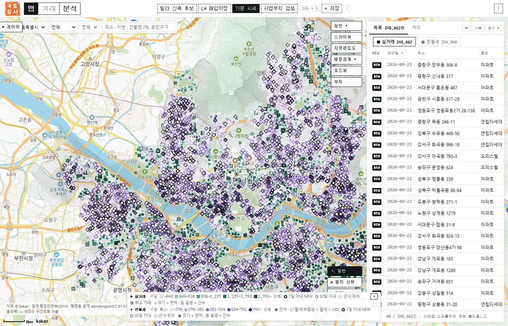
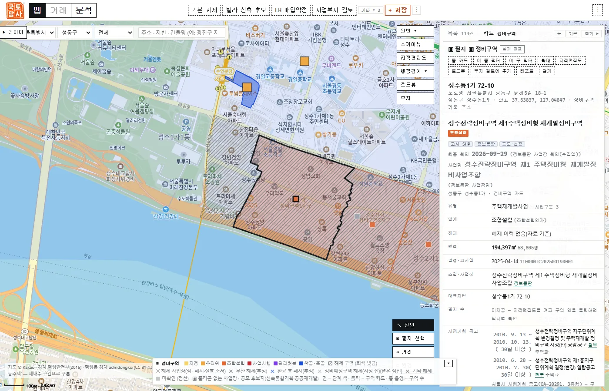

About
함께 만들고, 함께 나눕니다
와이드플러스는 서로 다른 사람들이 자유롭게 모여 만들고, 그 성과를 함께 나누는 회사입니다. 첫 무대는 부동산, 다음은 DAO처럼 누구나 참여하는 프로젝트입니다.
Why
정보가 열리면, 땅은 더 잘 쓰입니다
같은 땅을 두고도 아는 만큼 기회가 갈립니다. 우리는 부동산 정보를 투명하게 열고, 제대로 분석해, 좁은 국토를 더 효율적으로 쓰는 길을 찾습니다.
Product
국토탐사맵by wideplus
직접 보고 겪어야 아는 부동산을, 지도 위의 데이터로 미리 경험합니다.
흩어진 공공 자료를 한 지도에
실거래·인허가·정비구역부터 상권·노후도까지 겹쳐 봅니다.
지번 하나로 사업성까지
지을 수 있는 규모와 수지를 근거와 함께 계산합니다.
업계가 함께 쓰는 도구
중개·개발·컨설팅이 이 위에서 더 나은 서비스를 만듭니다.
BETA · 준비 중
Technology
안은 촘촘하게, 겉은 간결하게
공식 경로로 모은 공공 데이터, 건축 법규를 담은 규모검토 엔진, 원문 대조로 지키는 정확도.
서울 · 최근 2년 · 2026-09 기준


개발 중 화면 · 지도 © Kakao · 실거래 국토교통부 · 정비구역 서울시
Founder
김영권 대표
부동산 개발 컨설팅 · 빌라 신축 · 정비사업 사업성 실무. 코드 대신 AI 에이전트 팀과 함께 국토탐사맵을 직접 만듭니다.
Services
- 부동산 개발 컨설팅땅에서 무엇을, 얼마나 지을지
- 빌라 신축·개발법규·규모 검토부터 수지분석까지
- 정비사업 분석구역의 진행 단계와 사업성
English
Wideplus is a Korean company, founded in 2022, built on one idea: share creativity, grow together. We begin with real estate, where information is still unevenly shared, and plan open, participatory projects such as a DAO. Our first product, Gukto Tamsa Map, brings public property data onto one map, answers feasibility questions from a single lot number, and opens tools the industry can build on. It is led by founder Youngkwon Kim, a real-estate development consultant who builds it with Claude Code and a team of AI agents.
Contact
함께 만들 일을 기다립니다.
contact@wideplus.co.kr